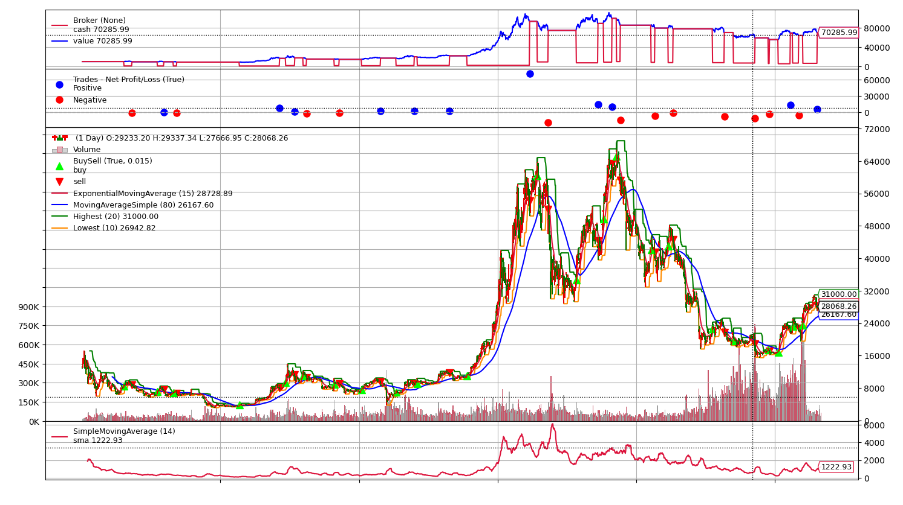

交易系统
这一次我想与大家探讨的问题是：交易系统。
我读大一的时候，有一次有一名心理咨询师来我们学院做讲座，他分享了自己交易比特币的一些经历。当时在场的大多数听众应该都只是当一个故事听，他们连交易是什么都不知道，自然就不能理解他在说什么。而我明白，他的经验非常宝贵，一定能对我有所启发。在讲座结束后，我请求他分享给我一些他对交易的理解，然而当时他急着走，走之前只告诉了我一句话：你需要构建自己的交易系统。
那么“交易系统”到底是什么？
简单来说，交易系统是一套能实现稳定盈利的规则。一个完整的交易系统应当包含：进场、出场和资金管理。
以《海龟交易法则》为例，一个简易版的海龟交易法则如下：
进场：突破20日最高点做多
出场：跌破10日最低点平多
这个策略的伪代码可以这样写：
1 | if 收盘价 > 20日最高点 |
这里，请容许我不赘述真正的Python代码怎么写，总之，我帮你拿比特币美元指数测试了一下，测试的时间段为2018年1月1日~2023年5月1日：
然而，海龟交易法则不只是这么简单。
真正的海龟交易法则引入了用ATR加仓的规则，它将所有的头寸分成了4份：
进场：突破20日最高点进场做多
加仓：浮盈1个ATR加仓一次，直到开满4次多单
出场：跌破10日最低点或距离最高点2个ATR，平仓
1 | if 空仓 and 收盘价 > 20日最高点: |

看到这里，你可能会大跌眼镜了：什么？真正的海龟交易法则还不如简易版的盈利能力强？！
没错，单拿比特币来说，是这样的。至于深层次的原因，这里一时半会也讲不完，但是我可以大概给你提供一些思考的方向：
1、海龟交易法则为什么不一把梭哈，而是采用浮盈加仓这种模式？
2、在比特币的表现上，真正的海龟交易法则略显逊色，但是在别的交易品种上就一定是这样吗？
3、海龟交易法则盈利的来源是什么？它会亏损吗？
4、海龟交易法则已经公开多年，很多人认为它已经失效了，你觉得呢？
如果你弄明白了这些问题，恭喜你，至少你已经具备了一个优秀交易员的必备素质：敏锐的洞察力。
如果你暂时还不知道这些问题的答案，我推荐你去读一读《海龟交易法则》这本书，书里有所有问题的答案。如果你读过原著，你应该还会知道：改版的海龟交易法则添加了两条均线作为过滤条件，并且在资金管理这一端，海龟交易法则通过ATR来计算某一品种分配的资金量。
伪代码如下：
1 | 根据ATR分配资金（单品种则忽略这一步） |